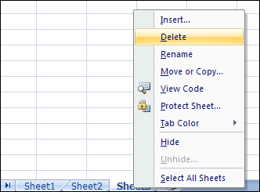
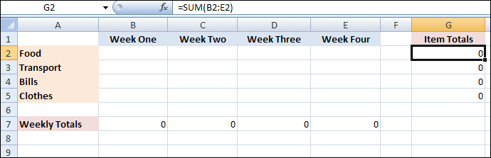
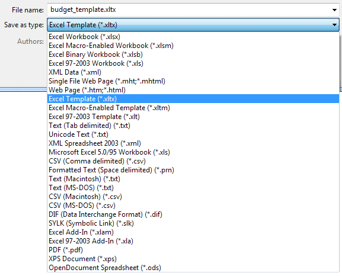
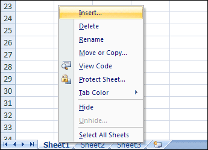
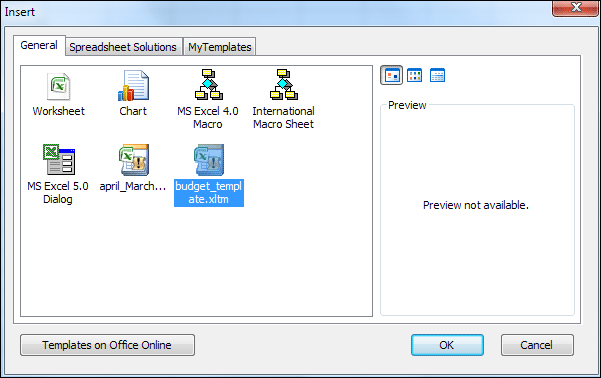

Free
computer Tutorials
|
Free
computer Tutorials
|
|
 HOME HOME
|
|
||||
Microsoft Excel 2007 to 2010Create a Worksheet TemplateCreating a worksheet template can really save you a lot of time. Templates are especially useful if you find yourself having to create the same spreadsheet over and over. For example, if a spreadsheet has sheets for each month of year it becomes a bit if a chore if you have to type out the heading and formula for each sheet. Instead, you only need to do it once. Then you can save it as a template. If you need a new month, you can then Insert your template. Here's how.
Open up a new workbook, with all three blank sheets at the bottom. Now delete two of the three sheets:  When you have deleted two sheets, the bottom left of your screen should look like this:
Now create the spreadsheet you want to use as a template. In the image below, we've just set up a simple spreadsheet with Week headings at the top and some labels down the left:  Notice how none of the data is filled in for the weeks. The reason there are zeros for the Weekly Totals and the Item Totals is because we have the formulas in place but no data for the weeks. Once it is saved as a template and inserted into a new workbook, then the data can be added. We won't have to add the formulas because they are already in place. Once you have your spreadsheet looking the way you want it, click the Office button then Save in Excel 2007. In Excel 2010, click File > Save. When the Save As dialogue box appears change the Save as type
area at the bottom to Excel template. Type a name for your template:  Before clicking Save, notice the file name now ends in xltx, and that it is being saved to a Templates folder inside Excel. Click the Save button to save your template. To use your template, close the current worksheet. Create a new blank workbook. Right click a sheet name at the bottom and select Insert from the menu that appears:  The Insert dialogue box should appear. Your template should
be on the list, in the General section:  Select your template, and click OK. Your template spreadsheet should then be inserted into your new workbook. You can delete any sheets your don't need, and rename the template. If you need a new sheet based on your template, right- click a sheet and select Insert from the menu again.
In the next part, you'll see how to add a data form to an Excel spreadsheet. |
|||||
|
|||||